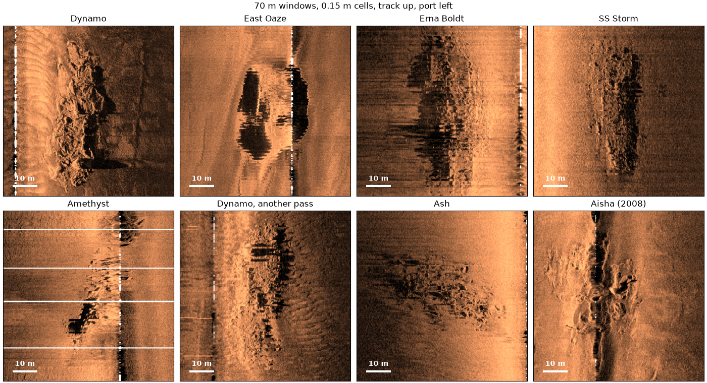

Note
Go to the end to download the full example code.
Eight wrecks at one scale#
Wrecks from a 2007-2008 survey of the approaches to the Thames, each shown in the same 70 m window at 0.15 m cells, so their sizes compare directly. The frame is the sonar’s own: along-track distance up, ground range across (port left, starboard right), the way the towfish saw each wreck, without placing it on a map.
Each window comes from one call,
extract_geometric_window_griddata(),
which interpolates the samples (linearly, with scipy’s griddata)
onto a regular grid in that frame. Before it, three steps:
No TVG. The recorder applied its own gain, so a second one would over-brighten far range. The samples are only converted to dB.
Smoothed navigation. These files record a position at every ping, but it runs ahead of each GPS fix and jumps back by 1 to 3 m when the next fix arrives, once a second. Gridded as recorded, the jumps leave blank rows and a smeared wreck.
smooth_navigation()replaces each position with a straight-line fit over 5 s, which removes the jumps.Bottom track and ground range. The files record altitude, but
altitude_from_bottom_track()fills any ping without it, thencompute_geometric_ranges()turns slant range into ground range.
Data: BGS London Gateway, Klein 3000 at 400 kHz, Open Government Licence v3.0, contains data supplied by UKRI (see Example data).
Usage: python examples/gallery/plot_wreck_gallery.py [output_dir]
# 2026 rshomberg@uri.edu
import sys
from pathlib import Path
import matplotlib.pyplot as plt
import numpy as np
from sidescanpy import datasets
from sidescanpy.export.geometric_window import extract_geometric_window_griddata
from sidescanpy.export.windows.levels import with_db_var
from sidescanpy.io import read_and_convert
from sidescanpy.log import configure_logging
from sidescanpy.processing import (
altitude_from_bottom_track,
compute_geometric_ranges,
interpolate_aux_onto_pings,
smooth_navigation,
)
from sidescanpy.processing.navigation import along_track_distance_m
out = Path(sys.argv[1]) if len(sys.argv) > 1 else Path(".")
out.mkdir(parents=True, exist_ok=True)
# The readers warn about these files' known quirks (sample scaling, sound
# velocity, the position offset); see the XTF format page.
configure_logging("ERROR")
The wrecks#
One line per wreck, with the ping nearest its middle and its ground range from the track (m, port negative), read off the waterfalls.
WRECKS = {
"Dynamo": ("bgs_london_gateway_dynamo_78.xtf", 1718, 29.9),
"East Oaze": ("bgs_london_gateway_eastoaze_31.xtf", 984, -11.0),
"Erna Boldt": ("bgs_london_gateway_ernaboldt_13.xtf", 555, -32.4),
"SS Storm": ("bgs_london_gateway_storm_04.xtf", 515, 40.8),
"Amethyst": ("bgs_london_gateway_amethyst_25.xtf", 615, -13.0),
"Dynamo, another pass": ("bgs_london_gateway_dynamo_80.xtf", 236, 21.0),
"Ash": ("bgs_london_gateway_ash_11.xtf", 542, -34.7),
"Aisha (2008)": ("bgs_london_gateway_aisha_05.xtf", 1321, 9.4),
}
WINDOW_M, CELL_M = 70.0, 0.15
SIZE_PX = int(round(WINDOW_M / CELL_M))
One wreck, step by step#
Read the line, interpolate the navigation onto the pings and smooth it, keep the pings around the wreck, add ground range and grid a window centred on the wreck.
def wreck_window(name, ping, across_m):
survey = read_and_convert([datasets.fetch(name)], fmt="xtf", nav_crs="EPSG:32631")
survey = smooth_navigation(interpolate_aux_onto_pings(survey), window_s=5.0)
ds = survey.get_frequency("hz_400000").dataset
first = max(ping - 500, 0)
ds = ds.isel(ping=slice(first, ping + 500)).load()
ds = with_db_var(compute_geometric_ranges(altitude_from_bottom_track(ds)))
along = along_track_distance_m(ds, fill_nav_stalls=True)
image, _ = extract_geometric_window_griddata(
ds, SIZE_PX, resolution_m=CELL_M, center_along_m=float(along[ping - first]),
center_across_m=across_m, channel_idx=None, backscatter_var="backscatter_db",
)
return image
windows = {title: wreck_window(*spec) for title, spec in WRECKS.items()}
for title, image in windows.items():
print(f"{title:22s} {image.shape[0]} x {image.shape[1]} cells, {np.isfinite(image).mean():.0%} filled")
Dynamo 467 x 467 cells, 99% filled
East Oaze 467 x 467 cells, 99% filled
Erna Boldt 467 x 467 cells, 100% filled
SS Storm 467 x 467 cells, 100% filled
Amethyst 467 x 467 cells, 97% filled
Dynamo, another pass 467 x 467 cells, 100% filled
Ash 467 x 467 cells, 100% filled
Aisha (2008) 467 x 467 cells, 100% filled
The gallery#
Each panel has its own colour stretch (1st to 99.7th percentile), since the recorder’s gain differs between lines. Blank cells are outside the swath: the strip under the towfish (nadir) in some panels, and on Amethyst a few rows where the recorder paused for half a second and recorded no pings.
half = WINDOW_M / 2
fig, axes = plt.subplots(2, 4, figsize=(14, 7.6), constrained_layout=True)
for ax, (title, image) in zip(axes.flat, windows.items()):
lo, hi = np.nanpercentile(image, [1, 99.7])
ax.imshow(image, cmap="copper", vmin=lo, vmax=hi, origin="lower", extent=[-half, half, -half, half])
ax.set_facecolor("white")
ax.set_title(title)
ax.set_xticks([])
ax.set_yticks([])
ax.plot([-half + 4, -half + 14], [-half + 4, -half + 4], color="white", lw=3, solid_capstyle="butt")
ax.text(-half + 9, -half + 5.5, "10 m", color="white", ha="center", va="bottom", fontweight="bold")
fig.suptitle(f"{WINDOW_M:.0f} m windows, {CELL_M} m cells, track up, port left")
fig.savefig(out / "wreck_gallery.png", dpi=200)

Total running time of the script: (3 minutes 23.763 seconds)